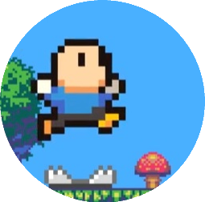
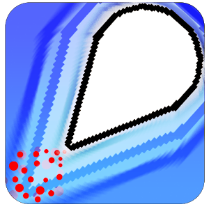

Projects
Here is a list of all my current projects, these can be anything from a game to a Java plugin. Click any of the headers to go to the project page, for some spigot plugins you may need to be logged in to be able to see the page.
Gory Platformer
|  | This (yet) unreleased project is my first big attempt at making a fully playable and enjoyable game. The game has a blood engine that is oddly satisfying to look at and will in the future have multiple hard stages/worlds to play through. Click the header to see a video of it in action :D |
Asteroid Avoid
|  | This is the first game that I finished and published and actually has some gameplay to it. The game contains art by my friend Jacen and music by my other friend Storm (Who both did a VERY GOOD job!). The game Asteroid Avoid was originally made for PC but far in development got branched off towards Android and is still available on the Play Store. Click the header to check it out. |
AdvancedArrowTrails
 |
This project was my first premium spigot/bukkit plugin, it adds trails behind arrows that players shoot and gives them access to a GUI where they can pick a trail from. This plugin costs 3$ on spigotmc.org and at the time of writing sold 61 copies. |
LootChestRewards
 |
This project was my second premium spigot/bukkit plugin, it adds chests to servers which players can open to receive different rewards that can be set up in a config. |
Home++
 |
This project was one of my first bukkit plugins I made using Java. The plugin allows players to set a home location and teleport back and forth between their current and home location. |
EasySwap
 |
This plugin allows better and easier armor switching by players in their server, instead of unequiping armor and then re-equiping the new armor it can be right clicked and will automatically swap. |
GiftChests
 |
This plugin allows better and easier armor switching by players in their server, instead of unequiping armor and then re-equiping the new armor it can be right clicked and will automatically swap. |